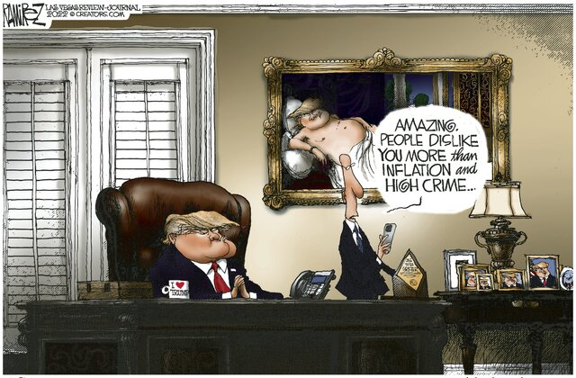

Back
Details
Highlights Nov.15,2022 16:20
Wholesale inflation rose 0.2% in October, below expectations, in a further sign that price increases across the economy are beginning to abate, the Bureau of Labor Statistics reported on Tuesday.
For the month, prices fell 0.2%, compared to estimates of 0.4%, putting the annual rate of increase at 8%, down from 8.4% in September.
Excluding volatile food and energy costs, wholesale prices rose 0.2%, compared to the 0.3% increase a month earlier. For the year, core wholesale inflation rose 5.4%.
U.S. inflation eases more than expected -report
U.S. inflation eases more than expected -report
Stocks jump for 2nd day, fueled by inflation optimism
Japan's economy shrinks as inflation takes toll
Inflation catches up with Germany's beloved kebabs
October jobs report could be 'surprising' -financial adviser
A decline in services inflation, the first since November 2020, helped the overall inflation picture.
“A major factor in the October decrease in prices for final demand services was the index for fuels and lubricants retailing, which fell 7.7 percent,” the report noted. “The indexes for portfolio management, long-distance motor carrying, automobile retailing (partial), and professional and commercial equipment wholesaling also moved lower.”
The report follows last week’s news that consumer prices rose a better-than-expected 7.7% last month. The report sparked a massive rally in stocks.
Political Cartoons on the Economy

Federal Reserve Vice Chair Lael Brainard told Bloomberg on Monday that “it probably may be appropriate soon” to dial down on interest rate hikes that have seen the central bank approve four consecutive increases of 75 basis points. Most observers now forecast the Fed to raise rates by 50 basis points when it meets in early December.
An increase in gasoline prices in October had Americans more fearful about inflation, according to a survey of consumers from the Federal Reserve Bank of New York released on Monday.
Inflation expectations for the coming year rose to 5.9%, up half a point from September and at the highest level since July. The three-year expectations also increased to 3.1% from 2.9% previously.
Some items have seen prices slow their inflationary ascent in recent months, with housing and used car prices among them.
The Institute for Supply Management’s September survey of manufacturers’ price index came in at 51.7 percent, down 0.8 percentage points from August and at its lowest reading since June 2020.
Wage growth has slowed somewhat, but the labor market remains tight with employers sitting on 10.7 million open positions.
“The market is not quite as hot but it is still pretty hot,” says Goodwill Industries International CEO Steve Preston.
He notes that Goodwill’s surveys find more than half of those looking for work are finding jobs that interest them but they lack the necessary skills. Goodwill assists employers in finding workers and provides support and training to those who may be out of the workforce for various reasons.
Ahead of the wholesale inflation report, retail bellwether Walmart beat expectations for its third-quarter earnings and Chief Financial Officer John David Rainey said consumers were being careful in what they buy.
“Pocketbooks are stretched,” he said,. “People have less discretionary income or less disposable income to spend on things – and so they’re looking for value.”
The giant retailer, often seen as an indicator of economic demand, raised its fourth-quarter outlook and also notably said that it had trimmed its outstanding inventory during the third quarter.
Target is set to announce its earnings on Wednesday, when the Census Bureau will also report retail sales for October.